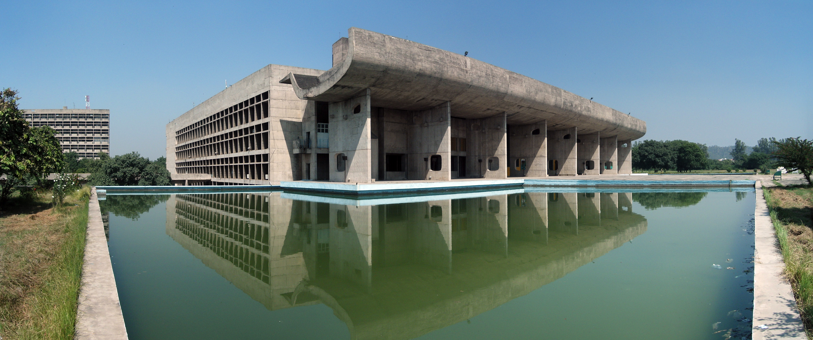

“I think it would be interesting if graphic design could look at itself in relation to music rather than architecture or industrial design. Then we wouldn’t have to talk about problem solving, and we could talk about resonance instead.” —The National Grid, Issue 1, 2006.
Graphic design as a relatively young discipline without an established canon, modeled the documentation of its history after more established fields like architecture, fine art, and industrial design. This modeling is understandable as graphic design found its footing as a profession; however, as we continue to document graphic design work-turned artifact, and as we use these histories to educate emerging designers, we may want to reconsider how we approach the treatment and connotation of graphic design, an industry which has merged itself with architecture and industrial design when it may be a closer relative to music, dance, and poetry.
I wondered why graphic design is treated (or treats itself) as less than architecture and industrial design, yet continues to strive for a similar elite status, like a younger sibling idealizing their older, capital-driven sibling. I think the graphic design’s ideological parentage — Modernism and industrial society — continues to influence present-day design work and education, and that since architecture and industrial design continue to hold strong ties to capitalism, and as graphic design is modeled after these industries, we have learned to treat graphic design as one more thing to commodify, and one more process to streamline and hegemonize. There is history in trying to control graphic design as a formula, a scientific process, but it’s not scientific — graphic design is about interpretation and feeling.
Let’s talk about the relationship between architecture and capitalism, which I knew nothing about before doing research for this essay, but learned is arguably an indestructible partnership.
Architects define much of our cities and public spaces (parks, plazas, facades, public buildings), but they do so in partnership with a client who directs and finances the project. Even in a neoliberal framework, attempts by architects to contribute to the production of democratic civic places are appropriated by developers with eyes for capital wealth, depublicizing public spaces in the process.1 Arguably, capitalism has exploited architecture, leaving us with only a shell of what could be for city streets, homes, and edifices of culture.2 And still, it appears that capitalism has not only exploited architecture, but has suffocated it, leaving the creative element in architecture a footnote in the project. However, the creativity that remains intrinsic in architecture may be the thing that can save it:
“The relation between architecture and capitalism remains tricky. As with everything capitalism encounters, there is the devastating likelihood of exploitation. Even so, rarely do architects stand in direct conflict with capital—they would be out of work. Unfortunately the engagement of architecture with capitalism up until this point has largely led to the exploitation of architecture and the extraction of surplus value from buildings and real estate. However, the fundamental creativity inherent in architecture suggests that it may be possible to disengage capital and find better ways of working. If so, architecture would stand to flourish, as would the lives of its inhabitants” [Mangold, 78].
However, a general acceptance of commodified buildings, cheap construction, and the exploitation of design perpetuates a process known as social reproduction reinforced by a desire for material and product. In the realm of architecture and desire, desire persists through idealized images of home and garden in multiple forms of media (television, Pinterest, Instagram), elevating the perception of how we should be living. “What may begin as desire is reinforced by the limited options people are given when it comes to the built environment. People are induced to consume building products, but their choices are severely limited by standardization and mass production, which again is driven by capitalist profit seeking. Everyone from manufacturers to retailers to construction contractors stand to benefit from offering fewer options and charging a premium for customization. While architecture has the potential to be uniquely adapted to the needs and conditions of its inhabitants, the demand for profit often forces consumers into a box” [Mangold, 76].
Capitalism has equally thrived in its partnership with industrial design. Peter Murphy writes of design as a metaphor for abstract labor of all kinds, and the heightened demand for abstract labor reflects the evolving nature of capitalist economies. He references the auto industry rapidly increasing its characterization of computerization, digital platforms, artificial intelligence, robotics, people-less factories, and technological automation, as “coeval” with design capitalism.3 I think it’s interesting that the 60 core years of Fordism were also the years in which architectural modernism dominated under the golden era of urbanism.
“During this period the advanced industrial nations urbanized on a massive scale. The state directed and funded much of this urbanisation process via big public investments in infrastructure, social housing, schools, hospitals, universities etc. This made large scale, long term physical planning possible. In Western Europe energy, utilities, broadcasting, railways, as well as many large scale industries had been nationalized. This further enhanced the feasibility of large scale, long term urban planning. The most congenial societal context for modernist urbanism existed within the socialist block with its centrally planned economy. Socialism delivered the logical conclusion of the tendencies of the era, rolling out the technological achievements of the era in a predictable, centrally planned manner, literally delivering the uniform consumption standard made possible by Fordist mass production to every member of society” [Schumacher, 2016].
The rise of aesthetics is similarly linked to industrial design and capitalism. The late 1960s gave way to the rise of everyday aesthetics in housing, urbanism, and retail and soon instead of asking, “Does it work?” people were asking “Does it look, feel, or sound good? Does it appeal to my imagination?” [Murphy, 147]. Murphy attributes a large part of this shift in consumer values to Steve Jobs’ Apple Corps in the 1980s. Jobs believed that it was the job of his company “to teach people aesthetics” [Murphy, 147].
The aesthetics of design and the practical nature of economics are evidenced in French architect Le Corbusier’s design of the Indian city Chandigarh, which holds the highest per capita income in the country. “This, arguably, is no accident. Rather it is a result of the way in which aesthetics functions as a subtle mode of production. The contemporary citizens of Chandigarh (India’s“city beautiful”) are testament to this. They have benefited from the paradoxical entwining of aesthetics and economics. Chandigarh enjoys a contemporary growth rate of 8 percent and a per capita income that is three times India’s national average. Its citizens profit from a high rate of literacy, there are attractive gardens, and the technology industry is booming. The city that grew out of Le Corbusier’s 1951 master plan has proved to be a long-term crucible for economic well-being” [Murphy, 147].
Capitalism and industrial design are such a strong pair because new things with colors, patterns, designs, and shapes excite the human imagination because they are subtle reminders of the innately human, satisfying act of creation. These products are constant reminders of what the human mind is capable of. So much of what we have today was first someone’s idea. Here we have the demand for goods and services that embody ingenious, alluring designs, and so the cycle of the capitalist economy carries on [Murphy, 149].
Before William A. Dwiggins coined the term graphic design in 1922, graphic design still existed, and that the way graphic design is innately woven into our lives through bus tickets, forms, advertisements, and... well, everything online, makes it difficult for non-practitioners (and sometimes even practitioners) to see it as a form of expression, interpretation, and feeling rather than viewing it as a staple of life and economy. I don’t know much about working with clients, but I’ve had conversations with designer friends who complain at the constant requests they received to make a brochure or logo “fresh” and “exciting.” Rick Poyner wrote in Out of the Studio: Graphic Design History and Visual Studies (2011) that graphic design doesn’t yet have the stature or pulling power of art history or architectural history, and I’m not sure it’s necessary to aim for either. I think there is opportunity for graphic design to redirect its position towards the pulling power of music, an expression laced with emotion and personality, and still achieve a broad appeal to non-practitioners.
I think the importance of creative expressions like music and graphic design, are that at one point, they cease being a luxury and a commodity, and they become sustenance. A person who doesn’t consider them self to be creative but finds them self in pain or in love may find peace in a poem or song. Expressions of creativity provide opportunity for us to deal in to a share of the human experience. I like to think about this idea that I first heard from Ethan Hawke when I think about making: “Most of us really want to offer the world something of quality, something that the world will consider good or important, and that’s really the enemy because it’s not up to us whether what we do is any good and if history has taught us anything, it’s that the world is an extremely unreliable critic.”
I think distinguishing graphic design from architecture and industrial design matters as an endeavor to be independent of the damaging effects of capitalism and narrow, Modernist systems. While design practitioners and non-practitioners have for so long been blinded by the influence of capitalism, modernization, and industrialization, things are finally coming into focus and as we are in a position to begin acknowledging the marginalization that has come about as a result of a capitalist marketplace, similarly, we are in a position to redirect our aims for graphic design and graphic designers.
And this is where this working draft of this essay sort of stops for now. But I have some more thoughts.
What is with this idea that graphic design should be problem-solving? I don’t know, but I don’t really get it. I saw a post on Instagram that said “design is to fix; art is to be free,” and I was like wait, I don’t want that pressure to fix... I want to be free too. I get that a team can create a website that will help people get healthcare and that would help people, but I just haven’t read enough about this. What sort of problems are we talking about? Is it about capitalist needs? I thought that people solve problems. Does music aim to solve problems? Maybe our emotional problems. I’m trying to wrap my head around this.
Just for the hell of it, I want to ask myself why does this essay matter? At times, this whole topic overwhelms me and I feel that it’s beyond my scope to tackle it. Clearly, an enormous responsibility comes with designing because some designs can warp our brains (*trying not to sweat*). But here, I’m relieving myself of the unrealistic expectation to solve this design problem as the result of one essay because it’s not possible. I’m just continuing a discourse.
1 Elizabeth Yarina (2017) How Architecture became Capitalism’s Handmaiden: Architecture as Alibi for The High Line’s Neoliberal Space of Capital Accumulation, Architecture and Culture.
2 William Mangold (2011). Money-tecture...Or How Architecture is Exploited by Capitalism.
3 Peter Murphy (2015). Design Capitalism: Design, Economics and Innovation in the Auto-Industrial Age.
4 Patrik Schumacher (2016). The Stages of Capitalism and the Styles of Architecture.